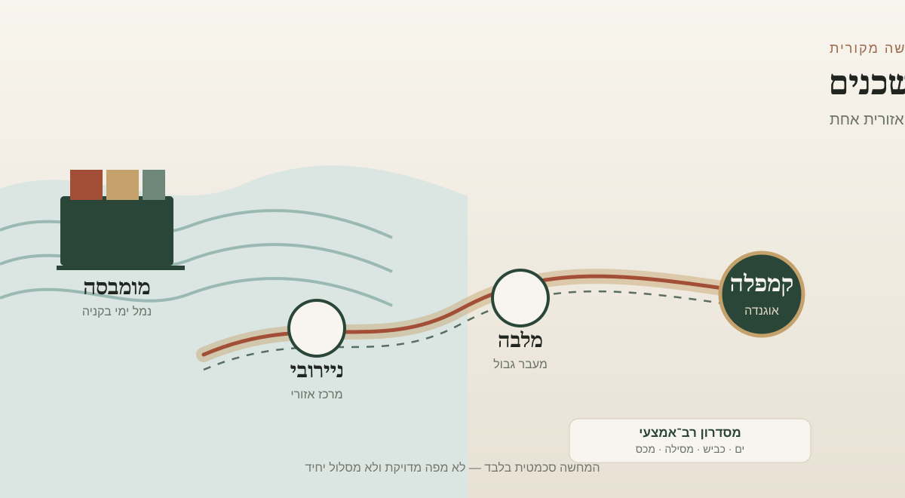

גאוגרפיה פוליטית · יחסים בינלאומיים · כלכלה
הנציגות שבנמל: מה מפת הדיפלומטיה של אוגנדה מגלה על כוח וריבונות
רשימת השגרירויות של אוגנדה נראית כמו מדריך כתובות. אבל הקונסוליה שלה במומבסה, בנמל של קניה, חושפת שהמדינה פועלת בעולם לא רק דרך בירות וממשלות — אלא דרך נמלים, מסדרונות סחר, ארגונים אזוריים ורשתות של אזרחים.
מדינה יכולה להיות ריבונית על אדמתה, ובכל זאת להיות תלויה במקום שנמצא מאות קילומטרים מעבר לגבולה. אוגנדה, מדינה ללא מוצא לים בלב מזרח אפריקה, ממחישה זאת היטב: לצד שגרירויות בבירות העולם, היא מחזיקה קונסוליה כללית במומבסה שבקניה — עיר נמל שאינה בירת המדינה המארחת. לכאורה, זו בחירה פרוטוקולרית מוזרה. למעשה, היא אחת הנקודות שמסבירות בצורה הטובה ביותר כיצד מדינה קטנה יחסית מנסה לנהל את יחסיה עם העולם.
הערך העברי בוויקיפדיה, ״נציגויות דיפלומטיות של אוגנדה בעולם״, נראה במבט ראשון כמו רשימה טכנית: מדינות, ערים וסוגי נציגויות. הוא מציג נוכחות באפריקה, באירופה, באסיה, באמריקה ובאוקיאניה, ולצדה משלחות קבועות לאיחוד האפריקאי, לאיחוד האירופי ולאומות המאוחדות. אלא שהערך נערך לאחרונה במרץ 2023, ולכן אין לקרוא בו מפקד עדכני ומלא. רשימת משרד החוץ האוגנדי מציגה כיום גם נציגויות נוספות, ובהן מומבסה. הפער בין שתי הרשימות אינו תקלה שולית: הוא מזכיר שמפת הדיפלומטיה היא מערכת משתנה, לא אטלס קבוע.

שגרירות היא לא רק דגל מעל בניין
כדי להבין מה באמת עושה נציגות דיפלומטית, כדאי לחזור אל אמנת וינה בדבר יחסים דיפלומטיים מ־1961. סעיף 3 שלה מונה תפקידים רחבים בהרבה מטקסים וקבלות פנים: ייצוג המדינה השולחת, הגנה על האינטרסים שלה ועל אזרחיה, ניהול משא ומתן עם ממשלת המדינה המארחת, איסוף מידע חוקי על התפתחויות ודיווח עליהן לבירה, וכן קידום יחסים כלכליים, תרבותיים ומדעיים. במילים אחרות, שגרירות היא גם תחנת מידע, גם ערוץ משא ומתן וגם כתובת לאזרחים ולחברות.
האמנה אף מבהירה שהחסינויות והזכויות הדיפלומטיות אינן נועדו להעניק יתרון אישי לדיפלומטים, אלא לאפשר לנציגויות לבצע את תפקידיהן ללא כפייה או הטרדה. ההבחנה הזאת חשובה: דיפלומטיה אינה אוסף של מחוות סמליות, אלא תשתית מוסדית שמאפשרת למדינה לפעול מעבר לגבולותיה. לכן גם סוגי הנציגויות חשובים. שגרירות פועלת בדרך כלל מול ממשלה של מדינה אחרת; קונסוליה מתמקדת לעיתים קרובות בשירות לאזרחים ובקשרים כלכליים מקומיים; ומשלחת קבועה מייצגת מדינה מול ארגון בינלאומי, לא מול מדינה מארחת אחת. אמנת וינה מאפשרת לנציגות דיפלומטית לבצע גם תפקידים קונסולריים, כך שהגבולות בין התפקידים אינם מוחלטים.
מומבסה: המקום שבו הגאוגרפיה הופכת למדיניות
הסיבה לנוכחות האוגנדית במומבסה פשוטה ומכרעת: סחורות. מדינה שאין לה חוף ים אינה יכולה לשלוח ולקבל מטענים דרך נמל משלה. היא תלויה בשכנותיה, במסילות, בכבישים, במעברי גבול, במכס וביעילות של נמלים זרים. לפי נתוני רשות הנמלים של קניה, כפי שדווחו בעיתון האוגנדי Daily Monitor בינואר 2025, בשנת 2024 עברו דרך נמל מומבסה 13.4 מיליון טונות של מטען מעבר, ומתוכם כ־8.8 מיליון טונות — 65.7 אחוזים — היו מיועדים לאוגנדה. זהו נתון לשנה מסוימת, לא חוק טבע, אך הוא ממחיש עד כמה הנמל הקנייתי מרכזי לכלכלה האוגנדית.
הקונסוליה הכללית של אוגנדה במומבסה נפתחה בשנת הכספים 2015/16 כדי לשמור על האינטרסים של המדינה בנמל. לפי ההסבר הרשמי של הקונסוליה, עבודתה כוללת קשר שוטף עם רשות הנמלים של קניה, רשות המסים הקנייתית וחברות הספנות, לצד איתור שווקים למוצרים אוגנדיים, קידום השקעות והעברת טכנולוגיה. היא עוסקת גם בתיירות ובקהילה האוגנדית החיה בחוף הקנייתי. כך נראית דיפלומטיה כשהיא יורדת מן השגרירות בבירה אל המקום שבו מכולה עלולה להתעכב, מסמך מכס חסר או החלטה של רשות נמל יכולה להשפיע על מחיר של מוצר במדינה שלמה.

מומבסה היא חלק מן המסדרון הצפוני — מערכת תחבורה רב־אמצעית שמחברת את הנמל אל אזור האגמים הגדולים. לפי רשות התיאום של המסדרון הצפוני, ההסדר האזורי כולל שש מדינות: בורונדי, הרפובליקה הדמוקרטית של קונגו, קניה, רואנדה, דרום סודאן ואוגנדה. הוא אינו עוסק רק בכביש אחד, אלא בנמלים, מסילות, צינורות, מכס, תיעוד, תנועה של אנשים ומטענים ותיאום בין רשויות. ההסכם המקורי נחתם ב־1985, והמסגרת הורחבה בהמשך כדי להפוך את המסדרון גם למרחב של פיתוח כלכלי.
כאן נכנסת לתמונה תובנה מתחום חקר הרשתות. ברשת, לא כל צומת חשוב באותה מידה. יש צמתים שמרכזים הרבה מסלולים, ולכן שיבוש בהם משפיע על חלקים רבים של המערכת; מדעני רשת מכנים זאת לעיתים ״מרכזיות״. מומבסה אינה בירת אוגנדה, והיא גם אינה מרכז פוליטי של קניה, אבל היא צומת בעל חשיבות עצומה לזרימת הסחורות אל אוגנדה וממנה. הקונסוליה אינה מפעילה את הנמל ואינה קובעת את מדיניות המכס הקנייתית. היא כן יכולה ליצור קשרים, לאסוף מידע, להתריע על חסמים ולסייע בתיאום. זוהי השפעה מסוג אחר: לא שליטה בצומת, אלא ניסיון להבטיח שהמדינה לא תישאר מחוץ לשיחה שמתנהלת בו.
המסדרון הוא גם היסטוריה
הקשרים האזוריים של אוגנדה אינם המצאה של עידן הגלובליזציה. לפי ההיסטוריה הרשמית של הקהילה המזרח־אפריקאית, קניה ואוגנדה הקימו איחוד מכס כבר ב־1917, וטנגניקה הצטרפה אליו ב־1927. אחר כך באו הנציבות המזרח־אפריקאית של 1948–1961, ארגון השירותים המשותפים של 1961–1967 והקהילה המזרח־אפריקאית הראשונה, שפעלה מ־1967 עד 1977 והתפרקה. רק לאחר הסכם לשיתוף פעולה שנחתם ב־1993 נבנתה מחדש מסגרת אזורית: האמנה החדשה נחתמה ב־30 בנובמבר 1999 ונכנסה לתוקף ב־7 ביולי 2000.
הרצף הזה מלמד ששיתוף פעולה אזורי אינו תוצאה אוטומטית של שכנות גאוגרפית. הוא דורש מוסדות, הסכמים, אמון ופשרות, והוא יכול גם להתפרק. מסילות, נמלים ומעברי גבול מחברים בין מדינות מבחינה חומרית; איחודי מכס, שווקים משותפים ומנגנוני תיאום מנסים להפוך את החיבור הזה לסדר פוליטי וכלכלי. דיפלומטיה דו־צדדית — למשל היחסים בין קמפלה לניירובי — פועלת בתוך מסגרת אזורית רחבה יותר, שבה החלטה על תקן, מכס או תשתית עשויה להשפיע על כמה מדינות בבת אחת.
ממפת שגרירויות למפת מוסדות
הערך בוויקיפדיה אינו מונה רק שגרירויות בבירות. הוא מציג גם משלחות קבועות לאיחוד האפריקאי באדיס אבבה, לאיחוד האירופי בבריסל ולאו״ם בניו יורק. אלה קשרים מסוג שונה: המדינה אינה מייצגת את עצמה מול ממשלה אחת, אלא משתתפת במוסדות שבהם נכתבים כללים, נבנות קואליציות ומתקבלות החלטות שמשפיעות על מדינות רבות. האיחוד האפריקאי כולל כיום 55 מדינות חברות; אוגנדה הצטרפה לארגון שקדם לו, ארגון אחדות אפריקה, עם הקמתו ב־1963.
בהצהרה שפרסם משרד החוץ האוגנדי באוגוסט 2026, שר החוץ הציג את המחויבות של המדינה לפעולה במסגרת הקהילה המזרח־אפריקאית, IGAD והאיחוד האפריקאי. הוא גם ציין את השתתפות אוגנדה בוועדת העשר של האיחוד האפריקאי, הפועלת לקידום רפורמה במועצת הביטחון של האו״ם ולייצוג הוגן יותר של אפריקה. אפשר לחלוק על עמדותיה של אוגנדה או על מידת השפעתה, אך עצם הבחירה להשקיע בנוכחות במוסדות האלה מצביעה על אסטרטגיה: למדינה שאינה מעצמה קשה לעצב לבדה את הכללים, אבל היא יכולה להשפיע באמצעות בריתות, קבוצות אזוריות ומנגנונים רב־צדדיים.
כשהדיפלומטיה נעשית משרד כלכלי בחו״ל
בשנים האחרונות אוגנדה מנסחת במפורש את הקשר בין נציגויות בחו״ל לבין מדיניות הפיתוח שלה. בספטמבר 2025 השיקו משרדי החוץ והאוצר אסטרטגיה לדיפלומטיה כלכלית ומסחרית. לפי הודעת ההשקה הרשמית, הנציגויות אמורות לסייע בהגדלת השקעות, יצוא ותיירות, למשוך טכנולוגיה וידע, לאסוף מודיעין שוק ולתאם עבודה עם המגזר הפרטי. זו הרחבה של תפקיד השגריר: הוא אינו רק מי שמדווח על יחסים בין ממשלות, אלא גם מי שמנסה לפתוח דלתות לחברות, ליצרנים ולמוסדות מחקר.
באוגוסט 2026 הציג משרד החוץ את מדיניות החוץ כחלק מתוכנית ממשלתית להגדלת התוצר פי עשרה עד שנת 2040, ל־500 מיליארד דולר, תוך דגש על תיעוש מבוסס חקלאות ומינרלים, תיירות, מדע וטכנולוגיה. חשוב להבחין בין יעד ממשלתי לבין תחזית כלכלית: ההצהרה אינה מוכיחה שהיעד יושג. היא כן מלמדת כיצד הממשלה מבקשת למדוד את עבודת הנציגויות — לא רק לפי מספר הפגישות והביקורים, אלא לפי השקעות, גישה לשווקים, שותפויות טכנולוגיות ויכולת להוסיף ערך למוצרים מקומיים.
החיבור הזה לכלכלה חושף גם את מגבלות הדיפלומטיה. נציגות יכולה לזהות משקיע, להסביר רגולציה או לתווך בין חברה לרשות ממשלתית; היא אינה יכולה לבדה לשפר כביש, לייעל מכס או להבטיח שמפעל יהיה תחרותי. אם העלויות הלוגיסטיות גבוהות, אם המוסדות המקומיים חלשים או אם אין כוח אדם מיומן, קשרים דיפלומטיים לא יפתרו את הבעיה. לכן מספר השגרירויות הוא מדד גרוע להצלחה. השאלה החשובה היא אם הקשרים שהן יוצרות מתורגמים לתוצאות שניתן לבדוק.
הריבונות נוסעת גם עם האזרחים
יש עוד ממד שקל להחמיץ כשמתבוננים במפה: אנשים. הקונסוליה במומבסה מטפלת גם בצרכים של אוגנדים החיים ועובדים בחוף הקנייתי, ומשרד החוץ האוגנדי מגדיר שירותים קונסולריים כחלק מעבודת הנציגויות בחו״ל. דרכון שפג תוקפו, מסמך נסיעה לשעת חירום, אדם שנעצר או משפחה שזקוקה לסיוע — כל אלה הם רגעים שבהם המדינה נדרשת להיות נוכחת מחוץ לשטחה. במובן הזה, רשת דיפלומטית היא גם רשת של שירות ציבורי ושל קשר בין אזרחים למדינתם.
אולי זו הסיבה שהמפה הדיפלומטית מעניינת יותר מכפי שנדמה. היא אינה רק מציגה היכן המדינה מחזיקה בניינים ודגלים, אלא היכן היא מבקשת להיות מסוגלת לדבר, להקשיב, לסייע, להתמקח ולהשפיע. מומבסה מספרת על תלות לוגיסטית; ארושה ואדיס אבבה על מוסדות אזוריים; ניו יורק ובריסל על זירות שבהן מתעצבים כללים; והנציגויות הקונסולריות על אזרחים שחייהם חורגים מגבולות המדינה.
צריך להיזהר, כמובן, מקריאה רומנטית מדי של המפה. רשימה אינה מגלה כמה תקציב יש לכל נציגות, כמה עובדים מוצבים בה, עד כמה היא מצליחה לפתוח דלתות או מהי מידת האמון של המדינה המארחת. נוכחות אינה זהה להשפעה, והשפעה אינה זהה לתוצאה. גם נתוני סחר משתנים משנה לשנה, והמסדרונות עצמם מתחרים זה בזה: אוגנדה יכולה להשתמש במומבסה, אך היא בוחנת גם נתיבים דרך נמל דאר א־סלאם שבטנזניה. תלות גאוגרפית אינה גורל שאין ממנו מוצא; היא מצב שמדינה מנסה לנהל, לצמצם או לאזן.
ובכל זאת, הקונסוליה במומבסה מציעה שיעור מדיני ברור. גבול המדינה מסמן היכן מסתיימת סמכותה הטריטוריאלית, אבל אינו מסמן היכן מסתיימים האינטרסים שלה. לעיתים, כדי להבין את מדיניות החוץ של מדינה, צריך להביט לא אל הבירה שבה יושבת הממשלה, אלא אל הנמל שבו ממתינות המכולות שלה. שם מתברר שהריבונות המודרנית אינה רק שליטה בשטח; היא גם היכולת לתחזק רשת של יחסים, תשתיות, מוסדות ואנשים שעליהם נשענת המדינה.
חמישה דברים שכדאי לזכור
- רשימת נציגויות היא צילום מצב, לא מדד קבוע של עוצמה; הערך העברי על אוגנדה עודכן לאחרונה במרץ 2023.
- קונסוליה במומבסה ממחישה כיצד מדינה ללא מוצא לים מגינה על אינטרסים כלכליים בנקודת מעבר חיונית.
- המסדרון הצפוני הוא מערכת אזורית של נמל, כביש, מסילה, מכס ומדינות שכנות — לא רק נתיב תחבורה.
- משלחות לאיחוד האפריקאי, לאיחוד האירופי ולאו״ם פועלות בזירה מוסדית שונה משגרירות מול מדינה יחידה.
- דיפלומטיה כלכלית נבחנת בתוצאות ממשיות — יצוא, השקעות, שותפויות ושירות לאזרחים — ולא במספר הדגלים בחו״ל.
שלוש שאלות למחשבה
- אם נמל זר הוא שער הכניסה העיקרי של מדינה לסחר העולמי, האם נוכחות דיפלומטית בו היא שירות קונסולרי או חלק ממדיניות הביטחון הכלכלי שלה?
- האם מדינה קטנה יכולה להשיג השפעה רבה יותר באמצעות נציגויות רבות, או באמצעות השקעה בכמה צמתים אסטרטגיים ובמוסדות אזוריים?
- כיצד יש למדוד הצלחה של דיפלומטיה כלכלית: במספר ההסכמים, בהיקף ההשקעות, בהפחתת עלויות הסחר או בשיפור חייהם של אזרחים?
לקריאה נוספת
- נציגויות דיפלומטיות של אוגנדה בעולם — הערך האקראי ששימש נקודת מוצא.
- הקונסוליה הכללית של אוגנדה במומבסה — About the Consulate — תיאור רשמי של תפקיד הקונסוליה בנמל ובחוף הקנייתי.
- Northern Corridor Transit and Transport Coordination Authority — מבנה המסדרון הצפוני ומדינות החברות בו.
- East African Community — History of the EAC — ההיסטוריה של שיתוף הפעולה האזורי במזרח אפריקה.
- אמנת וינה בדבר יחסים דיפלומטיים, 1961 — המסגרת המשפטית לתפקידי נציגויות דיפלומטיות.
- האיחוד האפריקאי — מדינות חברות — הרכב הארגון וההיסטוריה שלו.
- משרד החוץ והאוצר של אוגנדה — השקת אסטרטגיית הדיפלומטיה הכלכלית, 3 בספטמבר 2025.
- משרד החוץ של אוגנדה — סדרי העדיפויות של מדיניות החוץ, 18 באוגוסט 2026.
- Daily Monitor — אוגנדה כיעד המרכזי למטען מעבר בנמל מומבסה, 15 בינואר 2025.